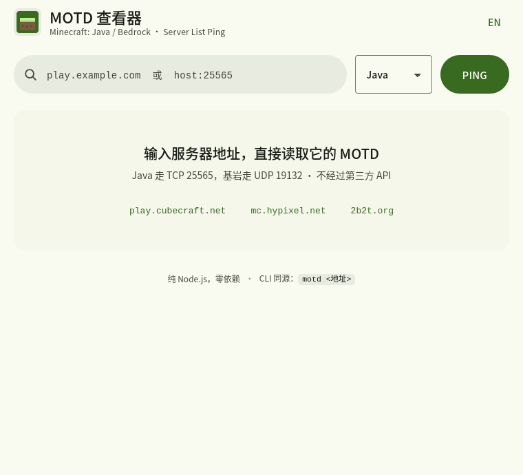
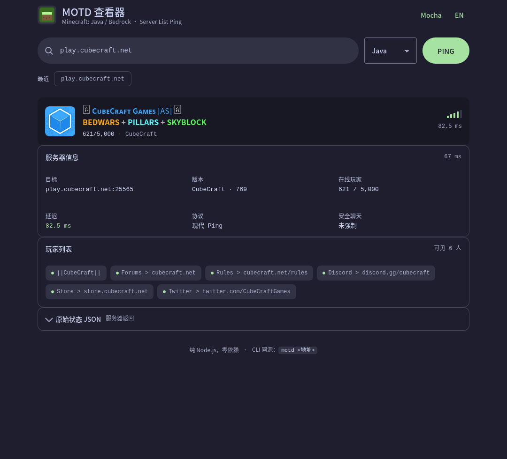
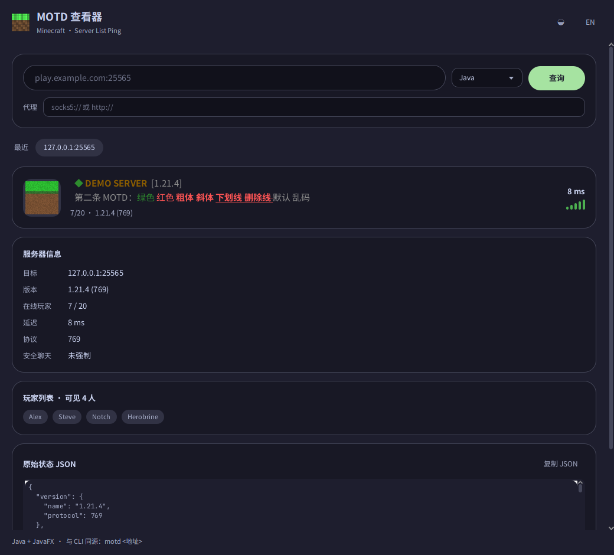

读 MOTD
解析 chat component 与 § 颜色码，粗体/斜体/下划线/删除线/乱码都还原。
纯 Node.js · JavaFX · Kotlin · 零运行时依赖
直接读 Minecraft 服务器的 Server List Ping：MOTD、在线人数、版本、延迟，Java 与基岩版都行。 四种形态共用一套协议实现：命令行、本地网页、桌面应用、Android。


解析 chat component 与 § 颜色码，粗体/斜体/下划线/删除线/乱码都还原。
Java 走 TCP 25565（含 SRV 与 DoH 兜底），基岩版走 UDP 19132 的 RakNet。
CLI、本地网页、JavaFX 桌面、Android 客户端，结果一致。
CLI 和网页只用 Node 内置模块，不需要 npm install；桌面版只带 JavaFX。
支持 socks5 / socks4 / http(s) 代理，连不上外服时走本地代理。
跟随系统明暗，或手动切浅色 / 深色 / Catppuccin Mocha / Latte。


需要 Node.js 18+，不用装依赖。
npx mc-motd play.cubecraft.net
npm i -g mc-motd && motd --webWindows / Linux / macOS(arm64) 安装包，自带 JavaFX，解压即用。
github.com/…/mc-motd/releasesAndroid 8.0+，下载 APK 侧载即可，中文名「服务器招牌」。
adb install mc-motd-android-*.apk网页版一条命令；桌面版需要 JDK 17+。
git clone https://github.com/must-be-the-Airconditi/mc-motd
cd mc-motd && node motd.js --web